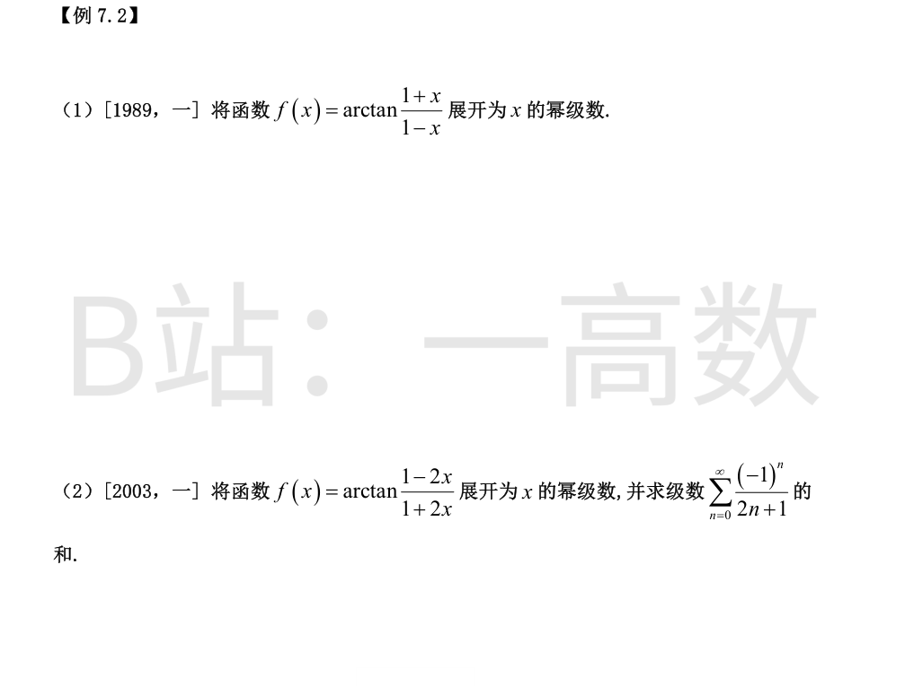

求导：
$$f'(x)=\frac{\left(\frac{1+x}{1-x}\right)'}{1+\left(\frac{1+x}{1-x}\right)^2}=\frac{\frac{2}{(1-x)^2}}{\frac{(1-x)^2+(1+x)^2}{(1-x)^2}}=\frac{1}{1+x^2}$$
故 f(x)=f(0)+\int_0^x \frac{dt}{1+t^2}=\frac{\pi}{4}+\arctan x（f(0)=arctan 1=π/4）。
代入 arctan x = Σ_{n=0}^∞ (-1)^n x^{2n+1}/(2n+1)（|x|≤1）：
$$f(x)=\frac{\pi}{4}+\sum_{n=0}^{\infty}\frac{(-1)^n x^{2n+1}}{2n+1}$$
x=1 处 f 无定义，故展开式成立范围为 -1≤x<1（x=-1 处级数收敛且值为 f(-1)=0）。
求导：
$$f'(x)=\frac{-\frac{4}{(1+2x)^2}}{1+\left(\frac{1-2x}{1+2x}\right)^2}=\frac{-4}{(1+2x)^2+(1-2x)^2}=-\frac{2}{1+4x^2}$$
当 |x|<1/2：
$$f'(x)=-2\sum_{n=0}^{\infty}(-1)^n4^nx^{2n}$$
逐项积分（f(0)=arctan 1=π/4）：
$$f(x)=\frac{\pi}{4}-2\sum_{n=0}^{\infty}\frac{(-1)^n4^nx^{2n+1}}{2n+1}$$
收敛范围：|4x²|<1 即 |x|<1/2；x=1/2 时级数收敛（莱布尼茨）且由阿贝尔定理其和为 f(1/2)=0，故成立范围 -1/2<x≤1/2。
令 x=1/2：0=\frac{\pi}{4}-2\sum\frac{(-1)^n4^n(1/2)^{2n+1}}{2n+1}，其中 4^n(1/2)^{2n+1}=1/2，故
$$\sum_{n=0}^{\infty}\frac{(-1)^n}{2n+1}=\frac{\pi}{4}$$